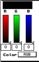

Color sliders and color type
In the color sliders and color type area, shown below, you can set the
color type and change the value of a selected color.

Figure 1: Color sliders and color types.
- The rectangular box above the color sliders shows the currently
selected color, which is also highlighted in the palette.
- The slider labels depend on the selected color type (R, G, and B or H,
S, and V). The numerical values appear at the bottom of each slider. You
can change each value by moving the slider or by typing in another
value.
- The color type pop-up menu lets you choose from color type RGB or HSV.
The CMY color type is not supported.